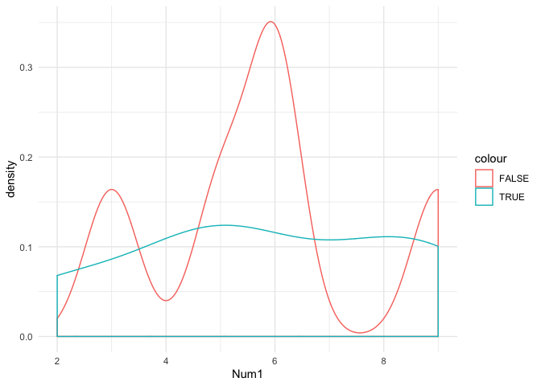
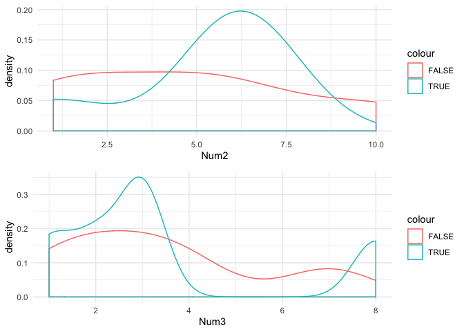

=======
=======
This package provides easy to use functions that can be used to perform initial exploratory data analysis. Instead of using multiple functions from multiple packages, this package allows a single command to perform and display beneficial data information, allowing the user to plan any necessary transformations and corrections prior to selecting the most appropriate model and or technique. .
Installation
You can install the released version of expldata from CRAN with:
And the development version from GitHub with:
EDA / multiplot
The EDA function is the multi-purpose tool of this package which is the main function of the package. EDA will perform every test contained in the package and display the results to the screen in an easy to read table. Additionally, if the plots parameter is set to TRUE, the function will return a list of ggplot2 density plots. An additional feature is that the function will determine if there is a single factor variable and assume that it is the dependent variable. This assumption will adjust the density plots to group and color code each of the factor levels for each plot. The plots can be displayed using the multiplot function also included in the package.
library(expldata)
#> Warning: replacing previous import 'ggplot2::theme_grey' by
#> 'huxtable::theme_grey' when loading 'expldata'
library(huxtable)Create Example DataFrame
set.seed(100)
example_df <- data.frame(replicate(5,sample(0:10, 10, replace = TRUE)))
example_df$X10 <- as.factor(c(TRUE, FALSE, FALSE, TRUE, TRUE, FALSE, FALSE, TRUE, TRUE, FALSE))
example_df$X11 <- c("a","b","c","d","a","b","c","d","a","b")
colnames(example_df)<- c("Num1","Num2","Num3","Num4","Num5","Fact1","Char1")
str(example_df)
#> 'data.frame': 10 obs. of 7 variables:
#> $ Num1 : int 9 6 5 2 8 9 6 5 5 3
#> $ Num2 : int 6 5 1 6 6 6 10 7 1 2
#> $ Num3 : int 2 7 1 8 1 2 3 3 3 4
#> $ Num4 : int 10 6 8 10 3 1 5 6 0 10
#> $ Num5 : int 5 8 8 8 5 7 10 6 0 8
#> $ Fact1: Factor w/ 2 levels "FALSE","TRUE": 2 1 1 2 2 1 1 2 2 1
#> $ Char1: chr "a" "b" "c" "d" ...examplePlots <- EDA(example_df, plots = TRUE)
#> Name of Object: example_df
#> Class of Object: data.frame
#>
#> Data Loading Information
#> rows row_match cols col_match
#> ───────────────────────────────────────
#> 10 7
#>
#>
#>
#> Sample
#> Num1 Num2 Num3 Num4 Num5 Fact1 Char1
#> ────────────────────────────────────────────────────
#> 9 6 2 1 7 FALSE b
#> 2 6 8 10 8 TRUE d
#> 3 2 4 10 8 FALSE b
#> 5 1 1 8 8 FALSE c
#> 8 6 1 3 5 TRUE a
#>
#> Rows with Missing Values
#> Row NA_Count Percent_of_Row
#> ─────────────────────────────────────
#> 0 0 0.00%
#>
#> Rows with Duplicate Values
#> Duplicate_Rows Percent_Duplicate Unique_Rows
#> ────────────────────────────────────────────────────
#> 0 0 10
#>
#>
#> Column Details
#> Column Col_Type NA_Count NA_Perce Unique_V Duplicat Min_Valu
#> s nt alues ed_Value e
#> s
#> ────────────────────────────────────────────────────────────────────────────
#> Char1 characte 0 0.00 % 4 6
#> r
#> Fact1 factor 0 0.00 % 2 8
#> Num1 integer 0 0.00 % 6 4 2
#> Num2 integer 0 0.00 % 6 4 1
#> Num3 integer 0 0.00 % 6 4 1
#> Num4 integer 0 0.00 % 7 3 0
#> Num5 integer 0 0.00 % 6 4 0
#>
#>
#> Column Min_Valu Max_Valu Spread SW_PVal Normal_D Inner_Ou
#> e e ist tliers
#> ─────────────────────────────────────────────────────────────────────────
#> Char1
#> Fact1
#> Num1 2 9 7 0.459 TRUE 0
#> Num2 1 10 9 0.172 TRUE 0
#> Num3 1 8 7 0.0565 TRUE 2
#> Num4 0 10 10 0.271 TRUE 0
#> Num5 0 10 10 0.0665 TRUE 1
#> 7/8 columns shown.Multiplot
The multiplot function is one that was adapted from Winston Chang in his R Graphics Cookbook (http://www.cookbook-r.com/Graphs/Multiple_graphs_on_one_page_(ggplot2)/). This function will print several plots stored in a list and display them to the viewer. The multiplot function can also accept addition grid parameters if the user would like to customize the displayed output. 